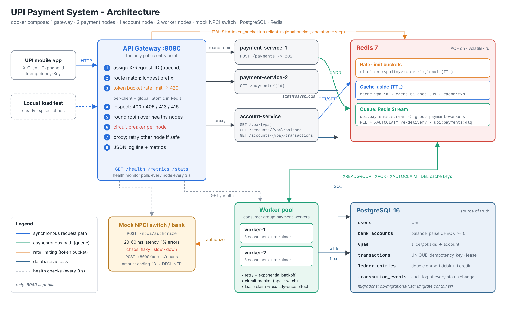
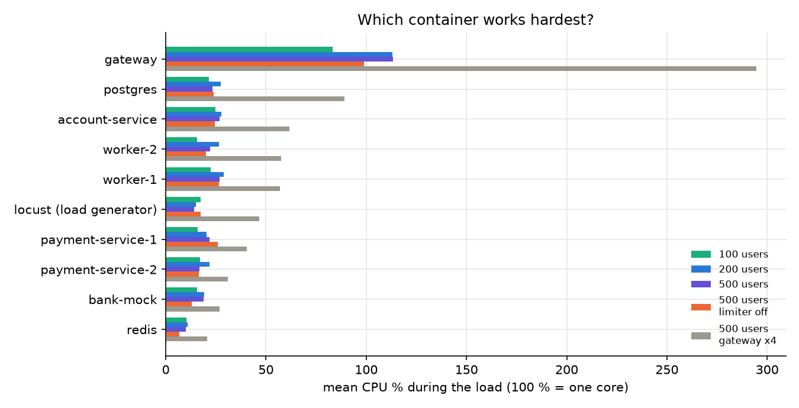
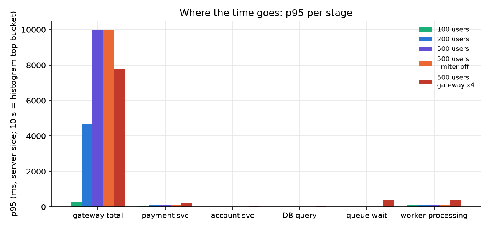
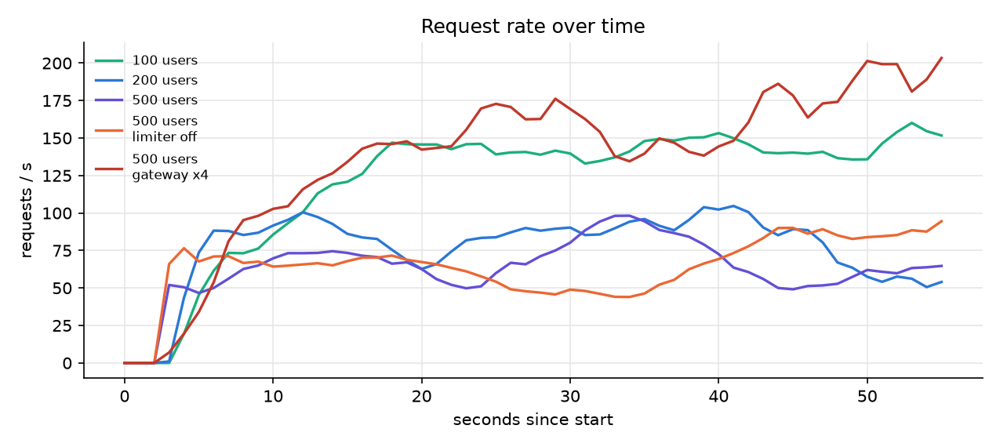
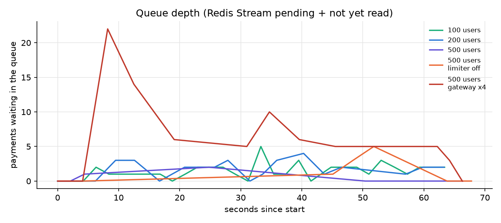

UPI Payment System - Project and Load-Test Report
Distributed System Design - architecture, implementation of the three phases, load testing and bottleneck analysis
| Name | Roll no. | GitHub | |
|---|---|---|---|
| Member 1 | Darsh Shah | 26MCE001 | https://github.com/darsh-1010 |
| Member 2 | Shrishti Karn | 26MCE007 | https://github.com/shrishtikarn |
1. Summary
A containerised model of the backend behind a UPI payments app: an API gateway with token-bucket rate limiting and health-aware routing, stateless payment and account services, PostgreSQL as the source of truth, Redis for cache, rate-limit buckets and the payment queue, an asynchronous worker pool that talks to a mock NPCI switch, and circuit breakers + retries with exponential backoff. One docker compose up starts all 10 containers; every request can be traced through every hop from the structured logs.
- Load test at 100 / 200 / 500 users: peak 138 req/s at 100 users with p95 270 ms; no 5xx errors and no lost payments at any level.
- Bottleneck found: the single-process API gateway (one CPU core, ~83-113% CPU) - at 500 users throughput fell to 66 req/s and p95 rose to 19.0 s, while the services, database and workers stayed fast.
- Running the gateway as 4 processes raised 500-user throughput to 157 req/s and cut p50 latency from 2.7 s to 1.3 s.
- Functional test with 228 distinct users and 17 scenario types: 259/259 as expected, money conserved, every balance exact.
2. Requirements and where they are implemented
| Phase | Requirement | Implementation |
|---|---|---|
| 1 | Architecture diagram + data-flow sketch | docs/architecture.png, docs/data-flow.png, docs/DESIGN.md |
| 1 | docker compose up spins up gateway + nodes | docker-compose.yml (10 containers, one shared Dockerfile) |
| 1 | API gateway: inspect, route, rate limit -> 429 | gateway/main.py pipeline; gateway/ratelimit.py token bucket (Redis Lua, per client + global, local fallback) |
| 1 | Health endpoint per node | GET /health on the gateway polls every node's /health (common/health.py, gateway/upstreams.py) |
| 2 | Database + schema + migrations | PostgreSQL 16; db/migrations/001-003*.sql, runner db/migrate.py, docs/DATABASE.md |
| 2 | In-memory cache | Redis cache-aside (common/cache.py) for VPA, balance, history, payment status; rate-limit counters in Redis |
| 2 | Async queue + worker pool updating the DB | Redis Streams consumer group; worker/main.py, worker/processor.py (one DB transaction per settlement) |
| 3 | Resilience pattern | Circuit breaker + retry with exponential backoff and jitter (common/resilience.py), dead-letter stream, XAUTOCLAIM re-delivery, sweeper |
| 3 | Load-testing script | Locust loadtest/locustfile.py; loadtest/run_loadtest.py, loadtest/scale_test.py (100/200/500 users), scripts/multi_user_test.py |
| 3 | Metrics + structured logging, trace a request | JSON logs with request id (common/logs.py), metrics (common/metrics.py), GET /stats, scripts/demo.py trace, /dashboard |
| 3 | Load-test report | Section 6 of this report; loadtest/scale_report.py, loadtest/make_report.py |
3. Architecture and data flow


- The app verifies the payee (
GET /api/v1/vpa/{vpa}, cached) and sendsPOST /api/v1/paymentswith anIdempotency-Key. - The gateway assigns an
X-Request-ID, takes a token from the user's bucket and the global bucket (else 429), inspects the request (405/413/415/400) and proxies it round-robin to a healthy payment node whose circuit breaker is closed. - The payment service validates it (amount <= Rs 1 lakh, payer != payee, VPAs exist), stores it as PENDING (a duplicate key returns the original), appends it to the Redis Stream and answers 202 in milliseconds.
- A worker claims it with a lease (PROCESSING), calls the bank switch through the circuit breaker with retries, then settles in one PostgreSQL transaction (row locks -> debit -> credit -> 2 ledger rows -> SUCCESS -> audit event), ACKs and invalidates the cache.
- The app polls
GET /api/v1/payments/{id}(cached) until SUCCESS / FAILED.
4. Implementation by phase
Phase 1 - Gateway, rate limiting, health
- Token bucket, two levels, atomic: every request needs a token from its client's bucket (read: burst 40, 20/s; write: burst 10, 2/s) and from a global bucket (burst 500, 300/s). One Lua script checks and updates both in Redis using Redis' clock, so several gateway processes share one consistent limit; if Redis is down the gateway falls back to an in-process bucket.
- Inspection and routing: longest-prefix routes, 405/413/415, mandatory
Idempotency-Keyon payments, round robin over healthy nodes, one retry on another node when safe (GET or idempotent POST), per-node circuit breaker. - Health: a background monitor probes every node's
/healthevery 3 s;GET /healthreports UP / DEGRADED / DOWN with per-node status, latency and breaker state.
Phase 2 - Persistence, cache, asynchronous workers
- Schema: users, bank_accounts (balance in BIGINT paise, CHECK >= 0), vpas, transactions (unique idempotency key, status enum, lease columns, request id), ledger_entries (double entry), transaction_events (append-only audit).
- Cache-aside with TTLs (VPA 5 min, balance 30 s, history 15 s, status 1 s pending / 5 min final) and explicit invalidation by the worker;
X-Cache: HIT/MISSon every read. - Queue: Redis Streams consumer group shared by 2 worker containers x 8 consumers; at-least-once delivery + lease + conditional status updates = money moves exactly once.
Phase 3 - Fault tolerance, load testing, observability
- Retries with exponential backoff and jitter (0.2 s, 0.4 s, 0.8 s) for bank 5xx/timeouts; circuit breaker opens after 5 consecutive failures for 10 s, then a half-open trial call; deferred payments are re-delivered by XAUTOCLAIM; after 3 deliveries -> FAILED + dead-letter stream.
- Observability: one JSON log line per event with service, node and request id; counters, gauges and latency histograms per node;
/stats,/metrics/prometheus, live/dashboard.
5. Load test: 100, 200 and 500 concurrent users
Tool: Locust 2.43 (running in Docker on the same network as the gateway), script loadtest/locustfile.py, orchestrated by loadtest/scale_test.py. Each level runs for 60 s with a steady number of simulated phone users (each with its own device id) doing a realistic mix: check balance (8), verify payee (5), send money (4), poll payment status (3), history (1), with 0.5-1.5 s think time; plus 2 abusive clients hammering the balance API ~50 times/s from one device id. During every run /stats was sampled every 2 s and docker stats every ~3 s.
Machine: one laptop, 12 logical CPUs, Docker Desktop (WSL2), all 10 containers + Locust sharing it. Absolute numbers are therefore lower than on separate servers; the trend across load levels is what matters.
Results
| Run | req/s | OK/s | 429s | Errors | p50 | p95 | p99 | Gateway p95 | Payments settled/s | Cache hit | Gateway CPU |
|---|---|---|---|---|---|---|---|---|---|---|---|
| 100 users | 138 | 113 | 697 | 0 | 11 ms | 270 ms | 650 ms | 294 ms | 15.4 | 73% | 83% |
| 200 users | 86 | 80 | 0 | 0 | 640 ms | 4.6 s | 7.7 s | 4.7 s | 15.1 | 76% | 113% |
| 500 users | 66 | 60 | 0 | 0 | 2.7 s | 19.0 s | 25.0 s | 10.0 s | 13.1 | 72% | 113% |
| 500 users, limiter off | 68 | 62 | 0 | 0 | 2.4 s | 19.0 s | 31.0 s | 10.0 s | 13.8 | 72% | 99% |
| 500 users, gateway x4 | 157 | 140 | 0 | 177 | 1.3 s | 6.0 s | 9.2 s | n/a | 29.5 | 66% | 294% |
req/s, OK/s, 429s, errors and p50/p95/p99 are measured by Locust (client side, all endpoints). Gateway p95 is the gateway's own latency histogram; payments settled/s, cache hit ratio and CPU come from /stats and docker stats (100 % CPU = one core).


How the rate limiter and the cache protected the system
- Rate limiter: at 100 users the two abusive clients were cut off by their per-client token bucket - 697 requests got 429 Too Many Requests (client bucket: 697, global bucket: 0) at almost no cost (the 429 is decided before any service is called), while normal users saw no errors.
- Cache: 73-76% of balance / VPA / status reads were served from Redis, so PostgreSQL stayed fast at every level: DB query p95 was 5 ms at 100 users and 5 ms at 500 users.
- Queue: payments were accepted with 202 and absorbed by the Redis Stream; the queue never held more than 22 payments and the workers settled each one in about 67 ms (p50 end-to-end) even at 500 users.
- No errors: across all runs there were no 5xx responses or lost payments - the system degraded by getting slower, never by failing.
Bottleneck analysis
Evidence that the time is lost inside the gateway, not in the services behind it:
| Stage (p95) | 100 users | 200 users | 500 users |
|---|---|---|---|
| Gateway total (gateway's view) | 294 ms | 4.7 s | 10.0 s |
| Account service upstream call (gateway's view) | 292 ms | 5.4 s | 10.0 s |
| Account service handler (service's own view) | 5 ms | 7 ms | 7 ms |
| Payment service handler | 37 ms | 82 ms | 110 ms |
| PostgreSQL query | 5 ms | 5 ms | 5 ms |
| Queue wait (stream -> worker) | 3 ms | 3 ms | 3 ms |
| Payment end-to-end (202 -> SUCCESS) | 99 ms | 100 ms | 98 ms |
- The account service answers in single-digit milliseconds at every level, yet the gateway waits seconds for the same calls: requests are queuing in the gateway's single asyncio event loop, which is CPU-bound. (Values shown as 10.0 s are the top bucket of the latency histogram, i.e. 10 s or more.)
- The gateway runs as one uvicorn process, so it can use only one CPU core however many the machine has. Per request it runs the rate-limit Lua script in Redis, proxies with
httpx, records metrics and writes a JSON log line - roughly 6 ms of CPU per request at 100 users, which caps the whole system at about 138 req/s on this laptop. - Back-end stages scale fine: DB queries, queue wait and worker settlement times are flat from 100 to 500 users.
Rate limiter on vs off at 500 users: 66 vs 68 req/s, p95 19.0 s vs 19.0 s - practically identical. The global token bucket (300 req/s) is set above what the gateway can actually process (~140 req/s here), so it never triggers; the per-client buckets also stop triggering at 200+ users because the saturated gateway slows the abusive clients down by itself. In other words, the limiter limits too late: it should be sized to the measured capacity.
Experiment: scaling the gateway out
To confirm the diagnosis the same 500-user test was repeated with the gateway running 4 uvicorn processes (GATEWAY_WORKERS=4; the rate-limit buckets live in Redis, so limits stay exact across processes). Throughput went from 66 to 157 req/s (2.4x), p50 latency from 2.7 s to 1.3 s and p95 from 19.0 s to 6.0 s, with 0 requests now (gateway CPU 294%, i.e. several cores) and payments settled 30/s instead of 13/s.
The bottleneck moves on. With the gateway no longer limiting, the next stages start to work hard: postgres 89%, account-service 62%, worker-2 58% CPU. 177 requests (1.9%) - all of them reads routed to the single account-service replica - got 503 Service Unavailable: when that one node answered too slowly the gateway's health check / per-node circuit breaker took it out of rotation for a moment, and with only one replica there was no other node to route to. (A 30-s repeat at the same load did not reproduce the 503s, so this is intermittent.) The payment service, which already has two replicas, had no errors.




Recommendations
- Scale the gateway horizontally: several processes (
GATEWAY_WORKERS) or several gateway containers behind a TCP load balancer. It is stateless apart from Redis, so this is safe; move health checks and metrics aggregation to a shared store so/statsstays complete with many processes. - Run a second account-service replica (as the payment service already does) and add PostgreSQL read capacity (connection pooling via PgBouncer, a read replica for balance/history) - these are the next stages to saturate once the gateway is scaled.
- Size the global token bucket to measured capacity (about 80 % of the throughput at which latency starts to climb), so excess load is shed with cheap 429s before the event loop saturates - that keeps latency low for admitted users.
- Make each proxied request cheaper: reuse one HTTP/1.1 keep-alive pool per upstream (already done) and consider a faster client (e.g. aiohttp), sample per-request log lines at high load, and batch metrics.
- Add an end-to-end deadline at the gateway (e.g. 2 s) so a request that has already waited too long in the queue is rejected quickly instead of occupying the loop.
6. Functional test with 100+ users (all scenarios)
scripts/multi_user_test.py drove 228 distinct users through every scenario a real UPI app meets; each user had its own device id. Results:
| Scenario | Requests | As expected | Outcomes |
|---|---|---|---|
| P2P transfer | 100 | 100/100 | SUCCESS x100 |
| P2M merchant payment | 30 | 30/30 | SUCCESS x30 |
| Concurrent payments to one payee | 20 | 20/20 | SUCCESS x20 |
| Concurrent overspend | 3 | 3/3 | SUCCESS x2, FAILED x1 |
| Double tap (idempotent replay) | 10 | 10/10 | SUCCESS x10 |
| Idempotency key reused | 5 | 5/5 | SUCCESS x5 |
| Bank decline | 10 | 10/10 | FAILED x10 |
| Insufficient funds | 1 | 1/1 | FAILED x1 |
| Amount above Rs 1 lakh | 4 | 4/4 | HTTP 422 AMOUNT_LIMIT_EXCEEDED x4 |
| Pay yourself | 4 | 4/4 | HTTP 422 SAME_PAYER_PAYEE x4 |
| Unknown payee | 4 | 4/4 | HTTP 404 PAYEE_VPA_NOT_FOUND x4 |
| Malformed VPA | 4 | 4/4 | HTTP 422 VALIDATION_ERROR x4 |
| Missing Idempotency-Key | 4 | 4/4 | HTTP 400 MISSING_IDEMPOTENCY_KEY x4 |
| Rate limit (one user floods 30 requests) | 30 | 30/30 | HTTP 202 x10, HTTP 429 x20 |
| Bank flaky (50% errors) | 20 | 20/20 | SUCCESS x20 |
| Bank down, then recovers | 10 | 10/10 | SUCCESS x10 |
| Consistency check | Result |
|---|---|
| Total money in the system unchanged | PASS |
| Every one of 233 tracked accounts moved by exactly its SUCCESS payments | PASS |
| No negative balances | PASS |
| No payment left PENDING/PROCESSING | PASS |
| Every double tap returned the original transaction (one debit) | PASS |
7. How to run
git clone https://github.com/shrishtikarn/upi-system-design.git && cd upi-system-design docker compose up --build -d python scripts/smoke_test.py # 11 end-to-end checks open http://127.0.0.1:8080/dashboard and http://127.0.0.1:8080/pay python scripts/multi_user_test.py # 100+ users, every scenario python loadtest/scale_test.py --gateway-workers 4 # 100/200/500-user load tests python loadtest/scale_report.py # numbers + charts
8. References
- NPCI - Harmonisation of TAT and customer compensation for failed transactions (IMPS/UPI OC 93, 2019) - https://www.npci.org.in/PDF/npci/imps/circular/2019/IMPS-UPI-I-OC-93-I-FY-19-20-I-Harmonisation-of-Turn-Around-Time(TAT)-and-customer-compensation-for-failed-transaction.pdf
- NPCI - UPI Circular 17: Debit reversals and deemed approval - https://www.npci.org.in/PDF/npci/upi/circular/2017/Circular-17-Debit-Reversals-and-Deemed-Approval_0.pdf
- NPCI - UPI OC 45: Solutions to reduce deemed approved transactions - https://www.npci.org.in/PDF/npci/upi/circular/2018/UPI OC 45 - Solutions to reduce deemed approved transaction.pdf
- NPCI - OC 149-A: Reduction of business declines in UPI - https://www.npci.org.in/PDF/npci/upi/circular/2022/OC149-A-Addendum-to-OC-149-Reduction-of-business-declines-in-UPI.pdf
- Oracle - India Unified Payments Interface (UPI) switch documentation - https://docs.oracle.com/cd/G15796_01/RHTML/India_UPI/Responsive%20HTML5/UPI/UPI/UPI.htm
- Business Today - NPCI to increase UPI limits for high-value payments from Sept 15 (2025) - https://www.businesstoday.in/personal-finance/banking/story/npci-to-increase-upi-transaction-limits-for-high-value-payments-from-sept-15-check-updated-limits-493278-2025-09-09
- Paytm Blog - UPI limits get a big boost from 15 Sept (2025) - https://paytm.com/blog/news/upi-higher-transaction-limits-sep-2025
- Razorpay Blog - UPI transaction limit per day - https://razorpay.com/blog/upi-transaction-limit-per-day/
- Business Standard - NPCI tightens UPI API supervision to curb network stress (2025) - https://www.business-standard.com/finance/news/npci-tightens-upi-api-supervision-to-curb-network-stress-125052201406_1.html
- Digit - NPCI's new UPI API rules from August 1 (balance-check limits) - https://www.digit.in/news/general/upi-alert-npcis-new-rules-kick-in-from-august-1-heres-what-changes.html
- Legal500 - NPCI guidelines on UPI and API usage - https://www.legal500.com/intelligence/india/technology/npci-guidelines-on-upi-and-api-usage
- Zerodha Support - Failed UPI transaction error codes - https://support.zerodha.com/category/funds/adding-funds/articles/failed-upi-transaction
- PhonePe Developer - Payment gateway error codes - https://developer.phonepe.com/payment-gateway/error-codes
- Paytm Blog - What is error code U30 in UPI? - https://paytm.com/blog/payments/upi/what-is-error-code-u30-in-upi/
- Paytm Blog - Bank responsibility for failed UPI transactions - https://paytm.com/blog/payments/upi/bank-responsibility-for-failed-upi-transaction
- Razorpay Blog - Deemed success in IMPS/UPI payouts - https://razorpay.com/blog/payout-processing-imps-upi-transactions-deemed-success-npci/